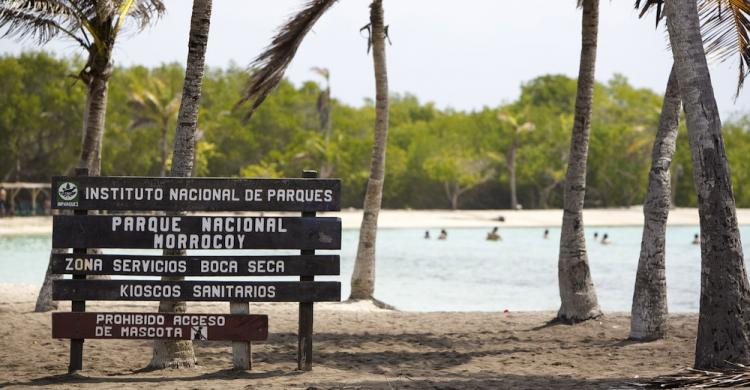

Parque Nacional Morrocoy
Es un parque nacional ubicado en el litoral más oriental del estado Falcón , en la costa central de Venezuela, cerca del Golfo Triste. Es un destino turístico muy popular debido a sus hermosas playas y a su gran biodiversidad tanto terrestre como marina. El parque cuenta con numerosos cayos, islotes y arrecifes de coral, y ofrece oportunidades para practicar deportes acuáticos como el buceo y el snorkeling. Además, el parque cuenta con numerosas rutas de senderismo y lugares históricos para visitar. En resumen, el Parque Nacional Morrocoy es un destino turístico muy popular en Venezuela debido a sus hermosas playas , su gran biodiversidad y sus múltiples actividades culturales y recreativas.
El parque cubre una superficie terrestre de unos 32.090 hectáreas y una superficie marina de 120.000 hectáreas, lo que lo convierte en el segundo parque nacional más grande de Venezuela. Algunas de las playas más populares del parque son Playa Mero, Playuela, Punta Brava y Cayo Sombrero. Además, el parque cuenta con numerosos cayos e islotes que forman un arco coralino que se extiende por la costa, lo que lo convierte en un destino ideal para practicar el snorkeling y el buceo. También hay varios ríos y manglares dentro del parque que son el hogar de una abundante vida salvaje. Las instalaciones turísticas dentro del parque incluyen hoteles, cabañas, restaurantes y una marina, lo que hace que sea un destino turístico muy popular tanto para turistas nacionales como internacionales. En resumen, el Parque Nacional Morrocoy es un lugar impresionante y diverso que ofrece muchas actividades y lugares para explorar y disfrutar.
